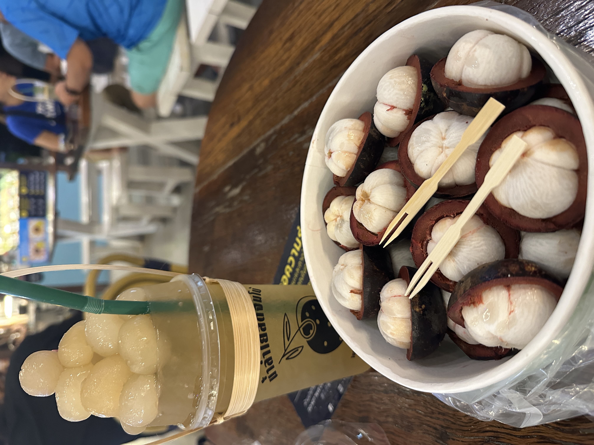
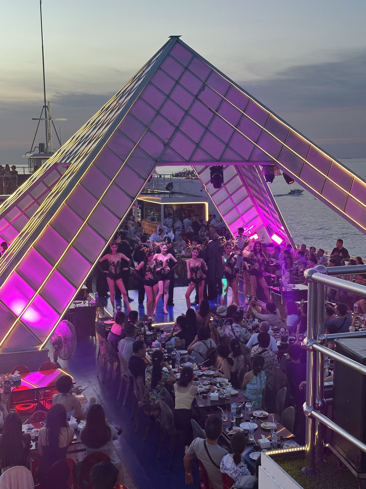
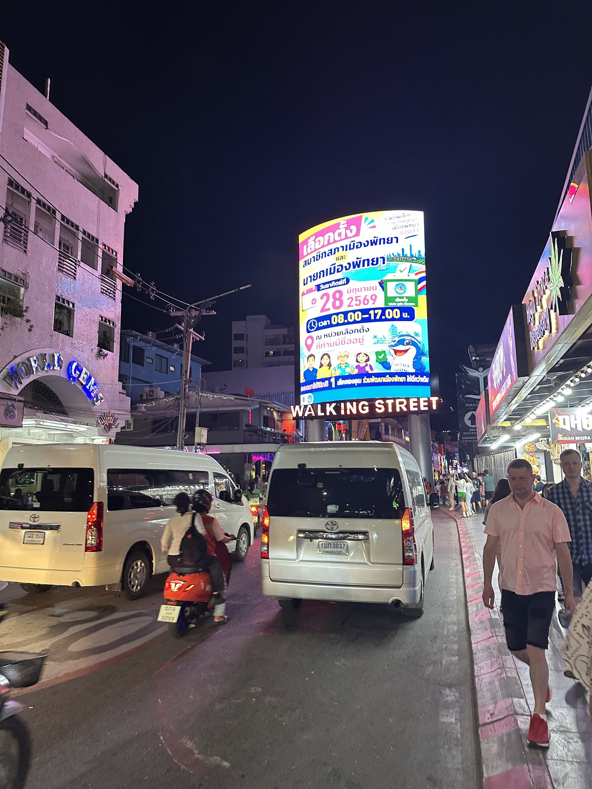

曼谷・熱鬧全部擠在同一區
曼谷商場、信仰地標和採買
這一段很像曼谷的縮影：可以在商場裡吹冷氣、喝飲料，也能在四面佛、象神和吉祥天女前感受這座城市很日常的信仰氛圍。逛到最後，再進 Big C 挑幾樣想帶回去的東西。
YoYo 小提醒：這區很好逛也很大，先拍一下集合地點，逛起來會更放心。
從曼谷的熱鬧，到芭達雅的夜晚，先收幾段會想回看的畫面。
旅程開始前，先來打個招呼。
旅行不用把每一個地方都玩得很滿。留一點時間逛街、吃一口喜歡的東西，或是在夜晚多看幾眼街景，回來以後反而最記得。
這趟曼谷・芭達雅，就跟著自己的節奏走；想看的景點、想吃的味道、想帶回去的小東西，我都先收在後面了。
有些味道是專程去找，有些只是逛累了剛好來一杯，反而會記很久。



這趟不是只在城市裡打卡，而是在熱鬧、信仰和夜色之間慢慢換場景。
這一段很像曼谷的縮影：可以在商場裡吹冷氣、喝飲料，也能在四面佛、象神和吉祥天女前感受這座城市很日常的信仰氛圍。逛到最後，再進 Big C 挑幾樣想帶回去的東西。
YoYo 小提醒：這區很好逛也很大，先拍一下集合地點，逛起來會更放心。
它不只是一般商場，走進去會有一點像換到不同城市的感覺。裡面有吃的、有逛的，天氣熱時進來休息一下，順便拍幾張照片，就很剛好。
YoYo 小提醒：不用特地把每個角落都走完，剛好有空檔進來晃晃就好。
水上市場適合看看水邊攤位、吃點小東西；飛機夜市則是天色暗下來後比較有感。兩個地方不需要硬湊成趕行程，更像是想拍照、想找小吃時可以慢慢走的一段。

這一站的重點不是只是吃飯，而是海景、燈光、舞台和表演一起出現的那種熱鬧。想把晚上的氣氛拉滿一點，這裡會是很有記憶點的一段。

這裡越晚越熱鬧，音樂、人潮和霓虹燈把整條街變得很有自己的節奏。它不只是走過去拍張照的地方，也是很多人想到芭達雅時，腦中會先浮現的一段畫面。
YoYo 小提醒：人潮多的地方，和同行的人保持在彼此看得到的距離，玩起來更自在。
不需要把行李箱塞滿，挑幾樣回家還會想起這趟旅程的就夠了。
如果一走進去腦袋就空白，可以先從三個方向逛：泡麵和零食、果乾和小禮物，再來才是鼻通、防曬這類實用小物。這樣不會一開始就推著籃子亂繞。
YoYo 小提醒：媽媽牌船麵可以保留在選物清單裡；其他食品則依自己的需求挑，結帳前看一下成分標示就好。